Префектура Нагано · Мацумото · сладости
Сладости Мацумото: пять угощений дома «Кайундо» и тянутая карамель «Иидая амэтэн»
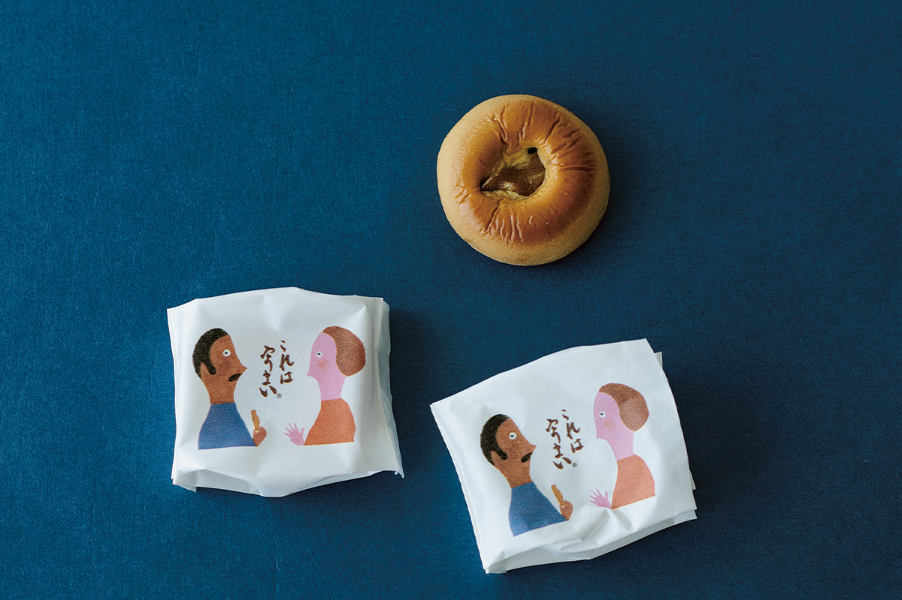
Мацумото славится как город мингэй, народного ремесла, и это видно даже на прилавке кондитерской. В старом доме «Кайундо» коробки для сладостей рисуют художники движения мингэй, а в карамельной лавке «Иидая амэтэн» тонкие пластинки из тянутой карамели называют съедобным ремеслом.
Город
Мацумото, город мингэй
Мацумото в префектуре Нагано давно известен как центр мингэй, японского движения за красоту простых вещей, сделанных руками. В городе до сих пор много старых рёканов, гостиниц, кофеен и ресторанов, в оформлении которых видна эта эстетика. К тому же здесь богатая история и природа: главная башня замка Мацумото, национальное сокровище Японии, поднимается на фоне Северных Альп.
Для поклонников мингэй в Мацумото есть что посмотреть. Музей народного ремесла Мацумото основал Таро Маруяма, разделявший идеи Мунэёси Янаги, а мебельную марку «Мацумото мингэй кагу» создал Сансиро Икэда.
Среди кондитерских Мацумото особенно известен дом «Кайундо». У него много сладостей, связанных с мингэй: коробки и обёртки для них рисовали художники этого движения, а названия и формы часто отсылают к местным горам, придорожным божествам и замку. Дальше рассказ о пяти угощениях «Кайундо» и об одной сладости старой карамельной лавки.
Шоколад
«Пидзютори»: маленькие драгоценные камни
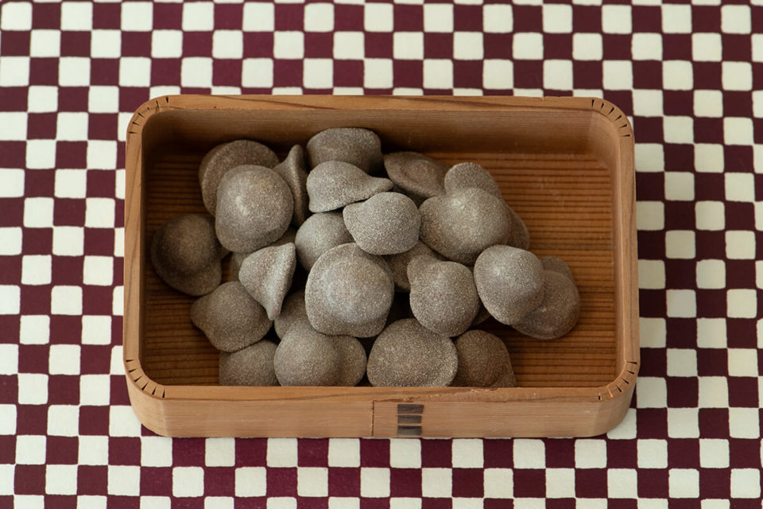
Среди сладостей «Кайундо», связанных с мингэй, есть шоколадные конфеты на один укус «Пидзютори». Название, как говорят, взято от английского слова, означающего драгоценности. Круглая конфета похожа на маленький неогранённый камень, а её оболочка выглядит как матовое стекло.
Внутри орех макадамия. Его поджаривают и посыпают французской солью из Геранда, а потом покрывают шоколадом собственной смеси, нарочно горьковатым. Соль, орех и горечь так хорошо сходятся, что остановиться трудно.
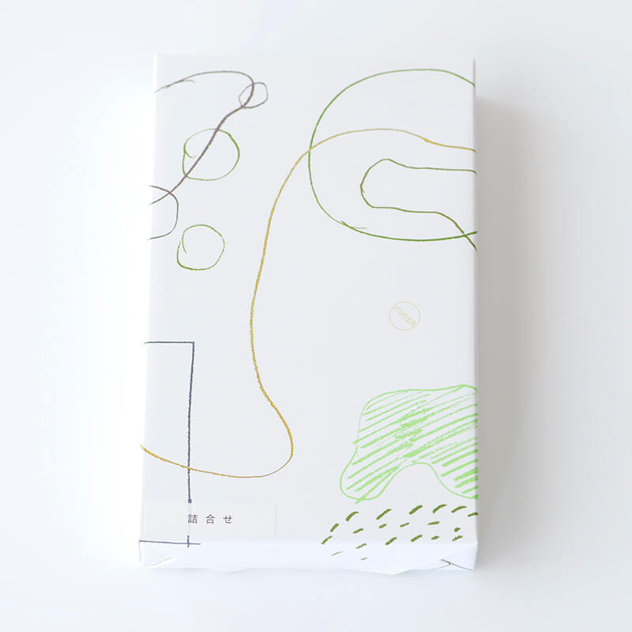
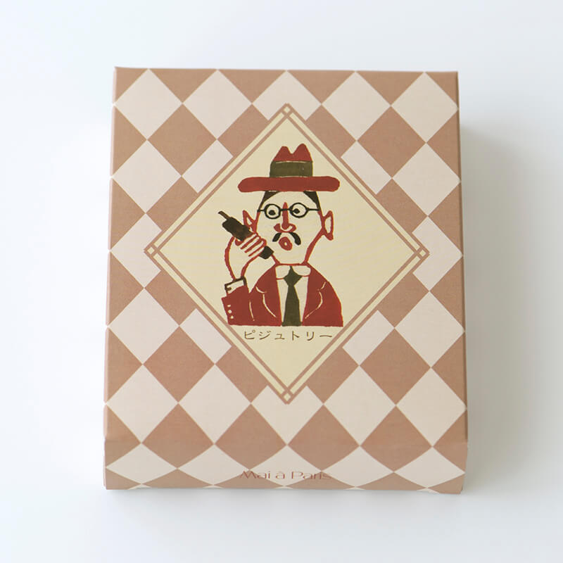
Рисунок на коробке сделал Самиро Юноки, художник по ткани, всю жизнь связанный с движением мингэй. На нём бородатый господин в очках и фетровой шляпе прижимает к уху мобильный телефон: рисунок полон юмора. «Пидзютори» продают ограниченный сезон, с октября, поэтому искать их стоит в холодные месяцы. Конфеты хороши и как подарок ко Дню святого Валентина.
Кастэра
«Пикэникэ»: бисквит для пикника
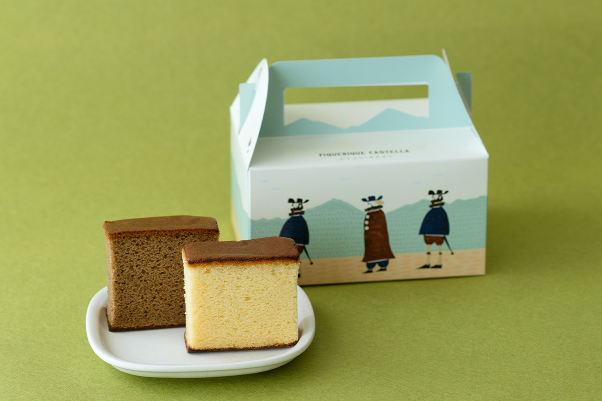
Среди европейских сладостей «Кайундо» особенно любят кастэру, японский бисквит «Пикэникэ». Её выпускают с 1989 года, а к 30-летию продаж у неё появилась новая коробка. «Пикэникэ» по-португальски значит пикник: кастэру задумали так, чтобы её было легко взять с собой на прогулку. Мука для неё вся из Нагано.
Оформление «Пикэникэ» тоже работа Юноки. В 2022 году художнику исполнилось 100 лет. Большая выставка его работ прошла в Токио в 2021–2022 годах, а осенью 2022 года переехала в Киото: от оригиналов иллюстраций к детским книгам до плакатов и абстрактных гобеленов.
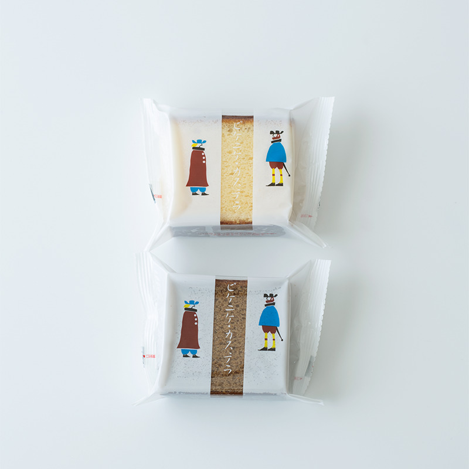
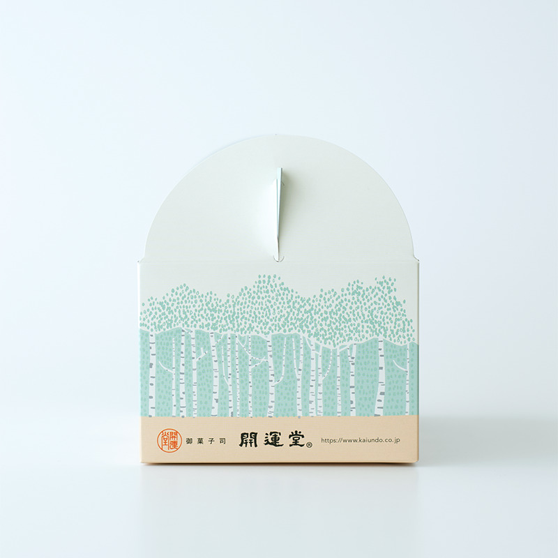
Рисунок на коробке трогательный, как в детской книжке. В подарок лучше брать набор из двух вкусов: «Пикэникэ кэйран» с насыщенным яичным вкусом и «Пикэникэ кохи» со вкусом кофе.
Манджу
«Корэ ва умай»: сладость, которую назвали гости
Название «Корэ ва умай» переводится как «Вот это вкусно!». Эту манджу с грецким орехом придумали около ста лет назад, в эпоху Тайсё (1912–1926). Покупатели, попробовав её, так и говорили: «Вот это вкусно!», и их восклицание стало именем сладости.
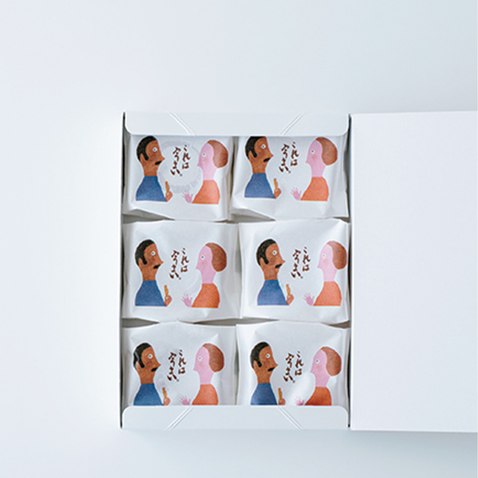
Начинка это бобовая паста с целыми зёрнами из отборной красной фасоли адзуки с острова Хоккайдо, из района Токати. Её варят на воде из подземного альпийского потока, которую поднимают с глубины 200 метров. Пасту заворачивают в тесто из муки Нагано, кладут сверху грецкий орех и запекают до румяной корочки.
Упаковку, на которой нарисовано то самое первое удивление покупателей, тоже сделал Юноки. Глядя на неё, хочется воскликнуть уже «вот это мило!».
Монака
«Адзумино фудзэй»: досодзин и гора Дзёнэн
В Синсю, как называют земли Нагано, с давних времён рядом с людьми стоят каменные божества. Больше всего Сансиро Икэда, основатель мебельной марки «Мацумото мингэй кагу», любил досодзинов, придорожных божеств. Их обычно изображают парой, мужчиной и женщиной, тесно прижавшимися друг к другу, и просят у них мира в доме и согласия между супругами.
Икэда изучал историю и культуру каменных изваяний. Ещё до книги, в ноябре 1961 года, он напечатал в журнале Токийского общества мингэй статью о досодзинах Синсю, а на обложку поставил оттиск своего любимого досодзина.
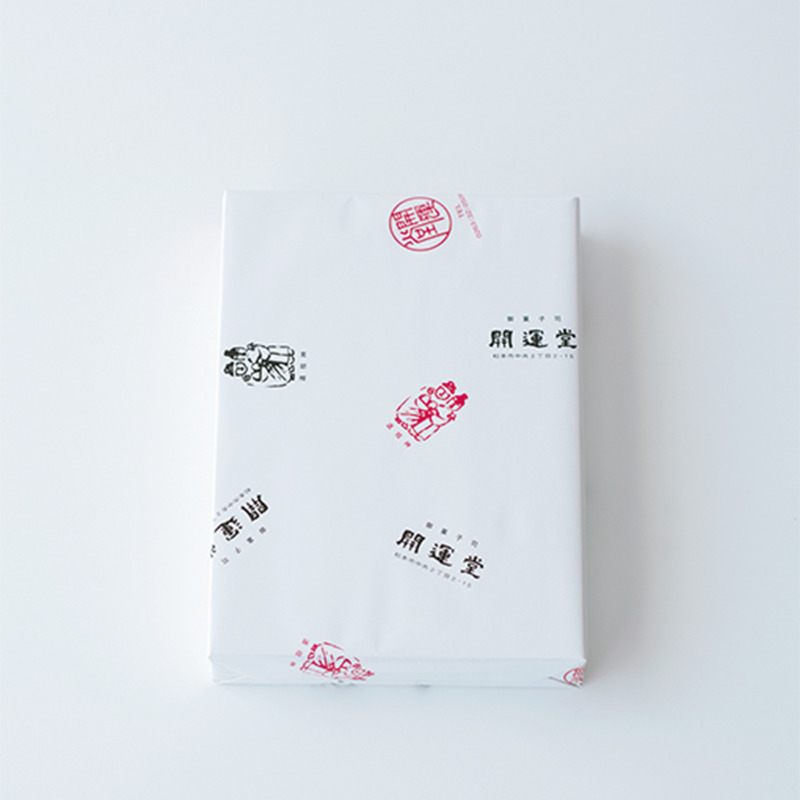
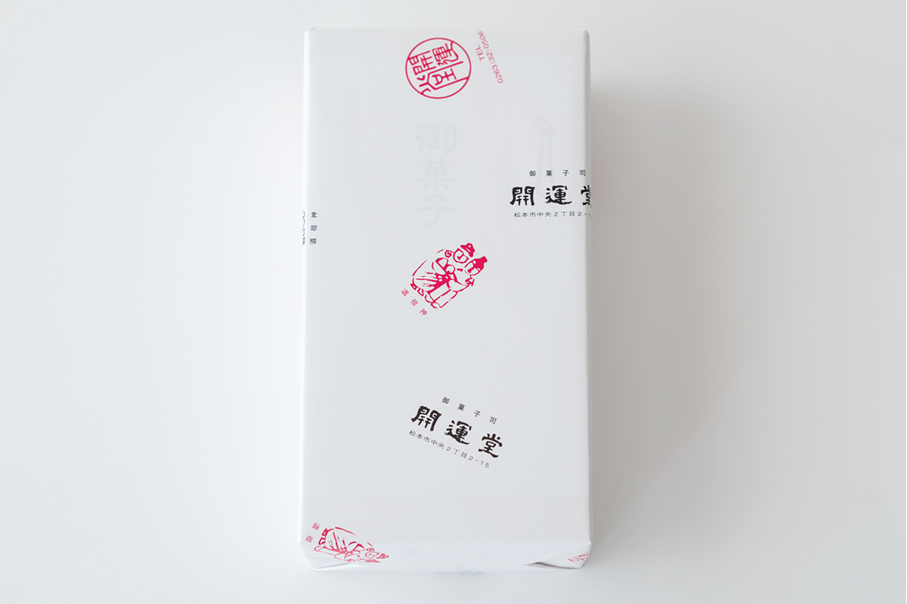
У «Кайундо» есть сухая сладость «Досодзин», а есть сезонная, сделанная по мотивам тех же божеств: монака (хрустящие вафельные половинки с начинкой) «Адзумино фудзэй», которую каждый год начинают продавать с первого дня весны по старому календарю. На хрустящей ароматной вафле оттиснуты пара досодзинов и гора Дзёнэн, символ долины Адзумино. Эта гора вошла в книгу «Сто знаменитых гор Японии». Внутри белая бобовая паста, уваренная с патокой из сахарного тростника, с простым, деревенским вкусом. Рука сама тянется за следующей.
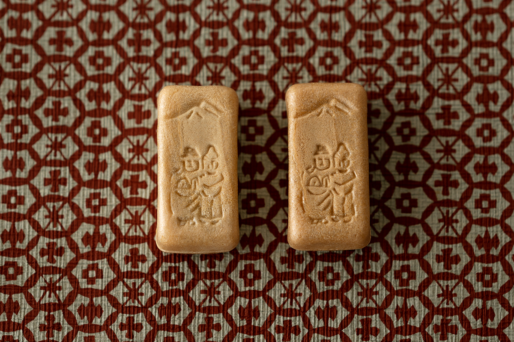
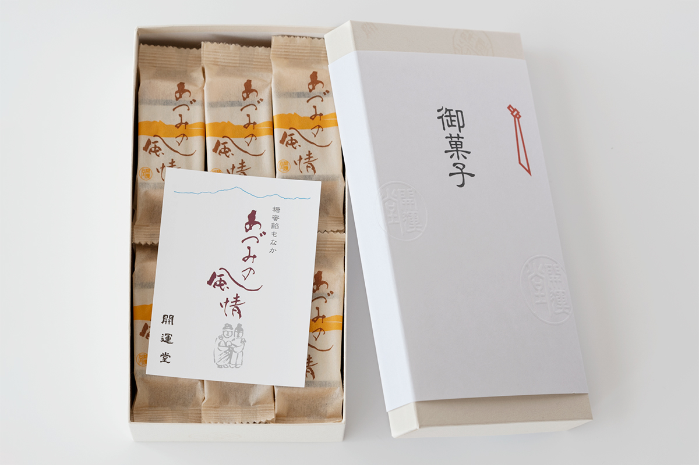
Замок
«Мацумото-но сиро»: замок в бумажной обёртке
Если покупать в Мацумото один сувенир, то рекомендуем «Мацумото-но сиро» из «Кайундо». Это печенье с какао в тесте и начинкой из розовой бобовой пасты со сливками. Вкус чуть горьковатый, тесто тает во рту.
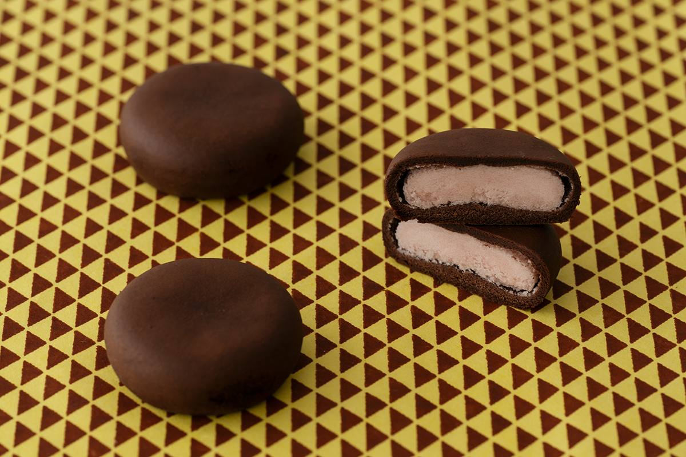
Его придумали по мотивам красного моста Удзумибаси, который ярко выделяется на фоне чёрных стен замка.
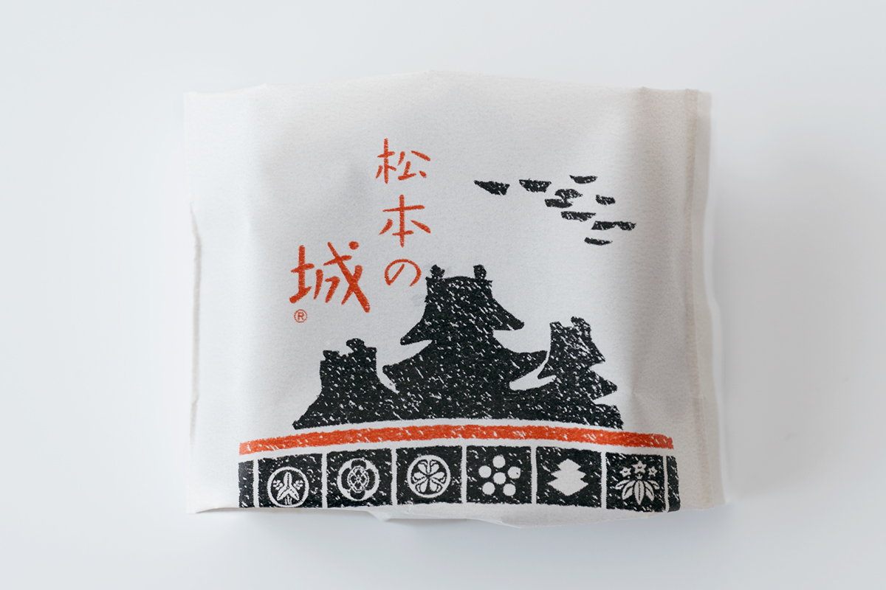
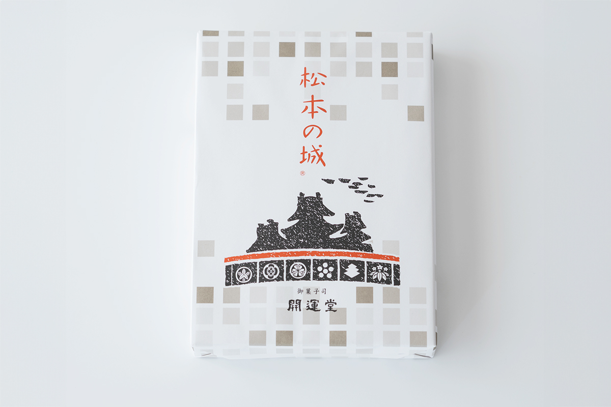
На упаковке тоже замок, а рисунок сделал Таро Маруяма, основатель Музея народного ремесла Мацумото. Его девизом были слова «Красиво то, что красиво», и всю жизнь он посвятил движению мингэй.
С такой историей к чаю печенье кажется ещё вкуснее.
«Кайундо», главный магазин
- Адрес
- префектура Нагано, Мацумото, Тюо, 2-2-15
- Телефон
- +81 263-32-0506
- Часы работы
- 9:00–18:00
- Выходные
- без выходных
- Сайт
- kaiundo.co.jp
Карамель
«Иидая амэтэн»: съедобное ремесло
Мацумото издавна славится карамелью амэ. Каждый январь здесь проходит ярмарка «Амэ-ити», и за карамелью на удачу собирается столько людей, что она стала приметой новогодних дней.
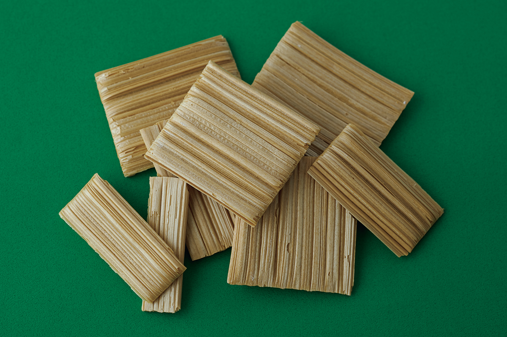
За сувениром рекомендуем зайти в «Иидая амэтэн», карамельную лавку, основанную в 1796 году. Её амэ-сэмбэй можно назвать съедобным мингэй. С виду это тонкое квадратное печенье, но на самом деле пластинка собрана из множества карамельных трубочек диаметром 1–2 мм, полых, как соломинки. Карамель вымешивают с воздухом, а потом двое мастеров вытягивают её, подстраиваясь под дыхание друг друга. Этот вкус создают руки мастеров: хрустящая пластинка с ароматом тёмного окинавского сахара, ничего похожего не найти.
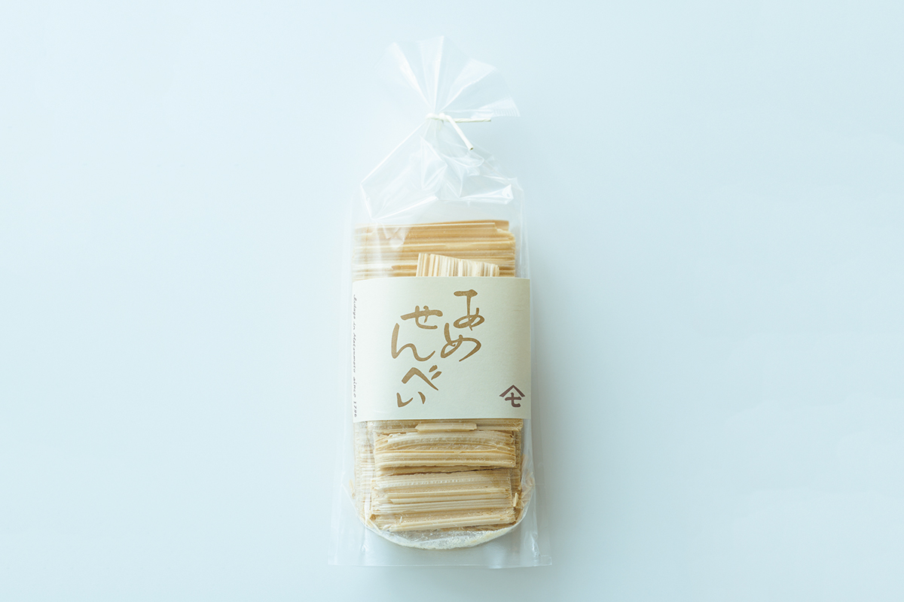
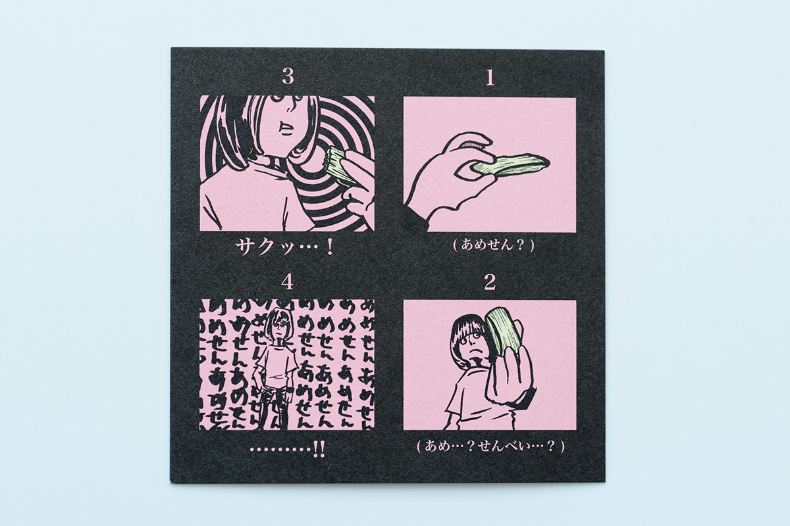
«Иидая амэтэн»
- Адрес
- префектура Нагано, Мацумото, Отэ, 2-4-2
- Телефон
- +81 263-32-1983
- Часы работы
- 9:00–18:00
- Выходные
- нерегулярно
- Сайт
- iidaya.com
Фото: Вакана Баба.